Alet ve Terim Sözlüğü
Programda geçen her kelime ve her alet burada. Önce terimler, sonra kullandığın aletler, en altta salonda olup şimdilik kullanmadıkların.
Terimler
- Tekrar
- Bir hareketi bir kez yapmak. "10 tekrar" = 10 kez in-kalk.
- Set
- Arka arkaya yapılan tekrar grubu. "3 × 10" = 10 tekrar yap, dinlen, 10 daha, dinlen, 10 daha.
- Süperset
- İki farklı hareketi arada dinlenmeden arka arkaya yapmak, sonra dinlenmek. Zamandan kazandırır. Programda A1+A2 ve B1+B2 süperset.
- Faz
- Programın 4 haftalık dönemleri. Faz 1 öğrenme, Faz 2 yükleme, Faz 3 serbest ağırlık. Her fazda set sayısı ve bazı hareketler değişir.
- Zone 2
- Kalbin orta-hafif çalıştığı kardiyo temposu; konuşabilirsin ama şarkı söyleyemezsin. Nabız 110–130.
- Interval
- Hızlı ve yavaş bölümlerin sırayla tekrar ettiği kardiyo. "8 × 1/1" = 8 kez (1 dk hızlı + 1 dk yavaş).
- Plate-loaded
- Ağırlığın makineye plaka takarak ayarlandığı alet (Hammer Force makineleri, hack squat). Pin'li makinelerde ise ağırlığı çubuktaki pimi taşıyarak seçersin.
- Pin
- Kablo makinelerinde ağırlık bloğunun deliğine soktuğun pim. "Pin 4" = dördüncü plaka seviyesi, genelde 5 kg'lık adımlar.
- Kalça menteşesi
- (Hinge) Dizleri az bükerek, kalçayı geriye vererek gövdeyi öne eğme. Sırt kaldırma ve RDL'nin temeli. Yerden bir şey alırken belin bükülmesini engelleyen hareket.
- İlerleme / çift ilerleme
- Önce tekrarı artır, aralığın üst sınırına gelince ağırlığı artır ve alt sınıra dön. Böyle her hafta ölçülebilir ilerlersin.
- Deload
- Bir haftalık hafifletme: ağırlıkları %20 düşür, set sayısı aynı. Bir hareket 3 antrenman üst üste ilerlemiyorsa uygula.
- Damper
- Kürek makinesinde volanın yanındaki 1–10 kolu. Zorluk değil "vites": yüksek sayı çekişi ağırlaştırır ama seni daha çok yormaz. Programda 5–6.
- Çekiş/dk
- Kürekte dakikadaki kürek sayısı (spm). Yavaş 18–20, hızlı 26–30. Yoğunluğun ölçüsü damper değil budur.
- Core
- Karın, bel ve kalça çevresindeki, gövdeyi sabit tutan kaslar. Plank ve dead bug bunları çalıştırır.
Programda kullandığın aletler
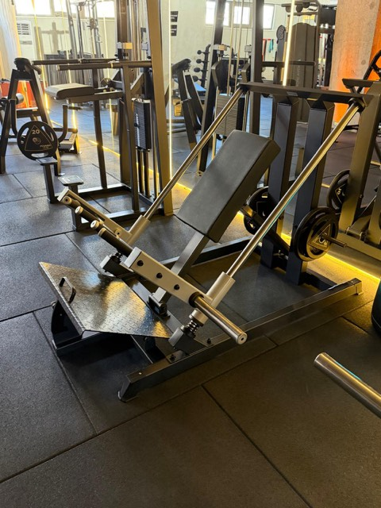
Hack Squat
45° eğimli, sırt pedli, omuz pedli, ayak platformlu plakalı makine. Kızaklar üzerinde kayar. Serbest squat'ın güvenli hali.
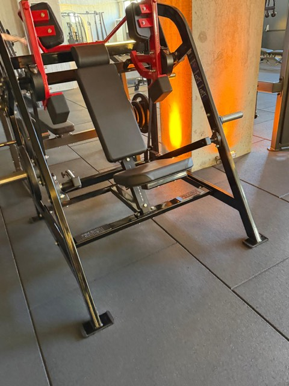
Chest Press (Hammer Force)
Kırmızı kollu, oturaklı, plakalı makine; kollar öne doğru gider. Yanındaki benzer kırmızı makine Shoulder Press'tir (kollar yukarı gider) — makinenin üstündeki etikete bak.
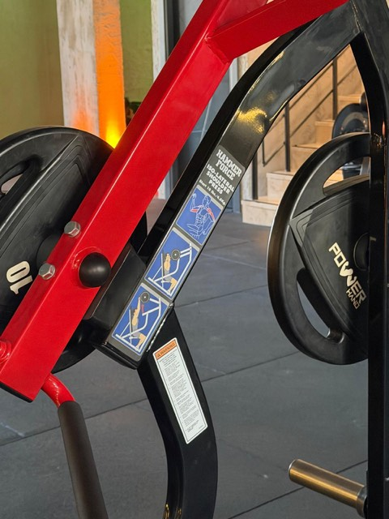
Shoulder Press (Hammer Force)
Kırmızı kollu plakalı makine, etiketinde "ISO-LATERAL SHOULDER PRESS" yazar. Oturup tutamakları başının üstüne doğru itersin.
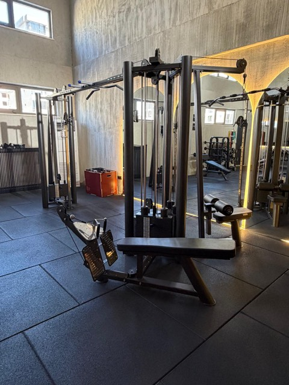
Lat Pulldown / Seated Row kulesi
Tek istasyonda iki hareket: üstte uzun barla yukarıdan çekiş (oturak + uyluk pedi), altta ayak plakalı oturarak çekiş. Ağırlık pinle seçilir.
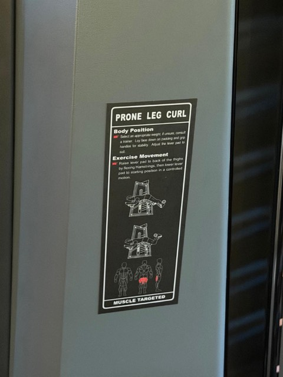
Prone Leg Curl
Yüzüstü yatılan, ayak bileği pedli pinli makine. Etiketi "PRONE LEG CURL".
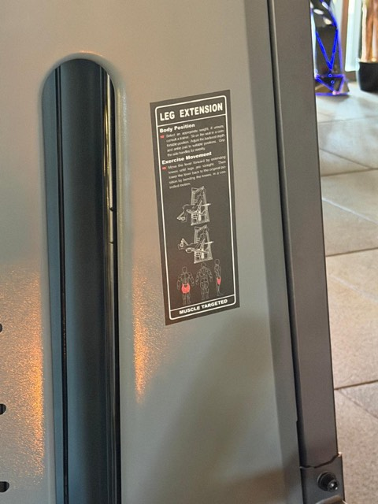
Leg Extension
Oturaklı, ayak bileği pedli pinli makine. Etiketi "LEG EXTENSION". Faz 1'de kullanılır.
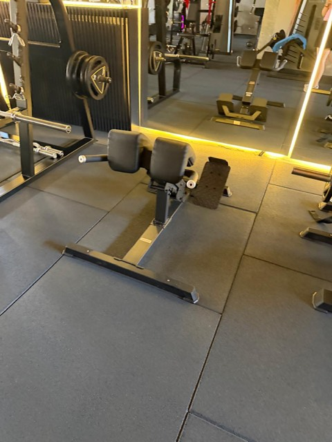
Roman Chair
Eğimli kalça pedi ve ayak bileği tutucusu olan sehpa. Yüzüstü yaslanıp gövdeni indirip kaldırırsın.
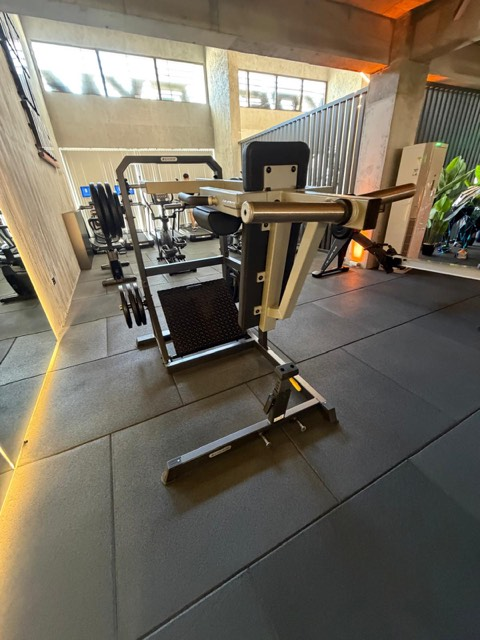
Standing Calf Machine
Omuz pedleri ve ayak platformu olan dik makine. Omuzların altına girip parmak ucunda yükselirsin. Meşgulse: step tahtasının kenarında, elde dambılla aynı hareket.
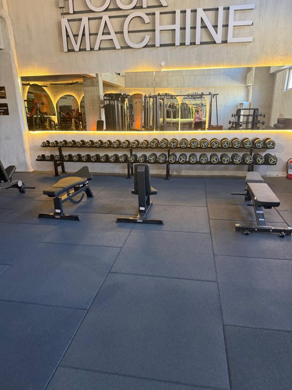
Dambıl duvarı ve benchler
"YOUR MACHINE" yazısının altındaki raf: 2 kg'dan 40+ kg'a dambıllar. Önündeki düz ve ayarlanabilir benchler. Faz 2–3'te goblet squat, RDL ve dambıl bench burada.
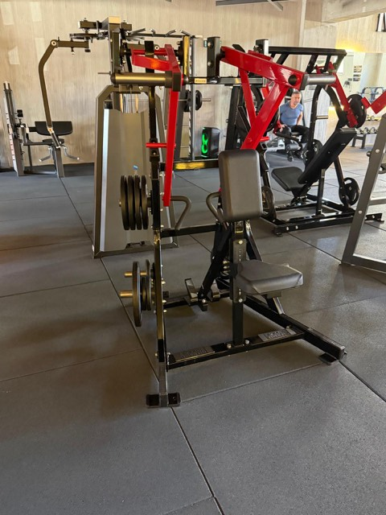
Iso-Lateral Low Row (Hammer Force)
Kırmızı kollu, göğüs pedli plakalı makine; etiketi "ISO-LATERAL LOW ROW". Göğsünü pede dayayıp iki kolu bağımsız çekersin. Faz 3'te kablo çekişin yerine geçer.

Kürek makinesi
Kayan oturak, ayak bağlamalı pedal, çekme tutamağı. Volanın yanındaki 1–10 damper kolunu 5'e getir (bu vitestir, zorluk değil). Monitör süre/kürek sayısı/kalori gösterir; çıkmadan önce kürek sayısını Interval sayfasına kaydet.

Koşu bandı
Beş tane var. Programda sadece eğimli yürüyüş için: koşu yok. Hız ve eğim tuşları ekranın iki yanında.

Eliptik
Ayaklar pedalda kalır, kollar hareketli. Sıfır darbe; ayak ağrısı olan günlerde koşu bandının yerine.
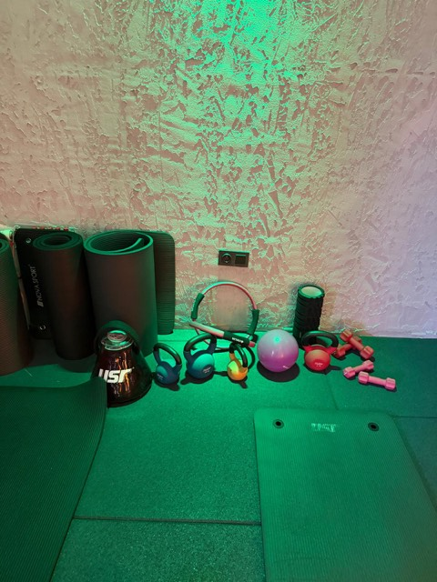
Mat alanı
Plank, dead bug ve esnemeler için. Foam roller (siyah silindir) soğumada baldır ve uyluk için 1 dk yuvarlamak iyi gelir.
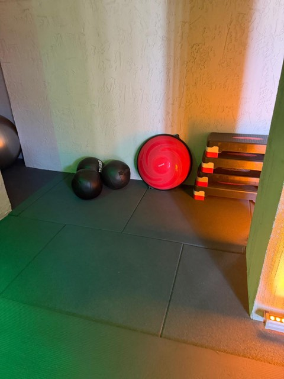
Step tahtası, bosu, medicine ball
Step: calf makinesi doluysa baldır için kenarı. Bosu ve medicine ball şimdilik programda yok.
Salonda var, şimdilik kullanmıyorsun
Bunları görüp "ben bunları yapmıyorum, eksik mi kalıyor" diye düşünme. Başlangıç fazında bilinçli olarak dışarıda; 12. haftadan sonra sıraya girerler.
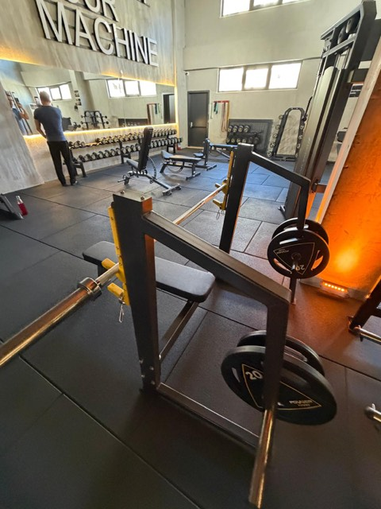
Olimpik Bench Press
Barbell ile sırtüstü göğüs itiş. Emniyet için spotter (yanında biri) ister; dambıl bench güvenli alternatifi. 12. haftadan sonra.
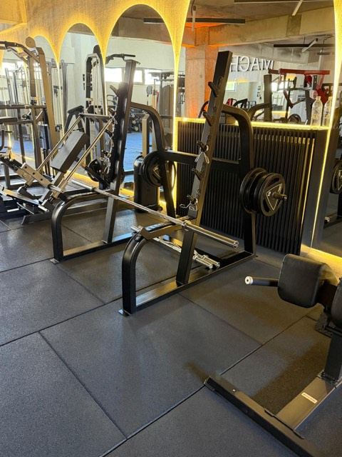
Squat Rack (Half rack)
Barbell squat ve deadlift için kafes. Hack squat ve goblet squat formu oturduktan sonra buraya geçilir.
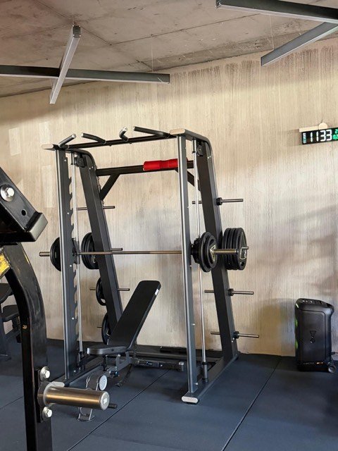
Smith Makinesi
Barbell'in raylarda sabit hareket ettiği kafes. Hack squat varken gerek yok.
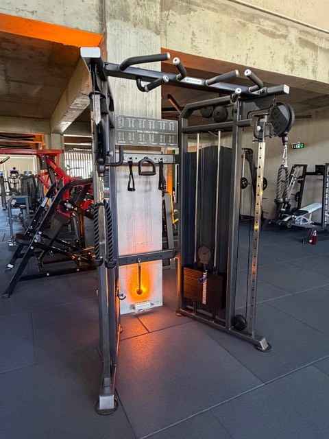
Dual Cable Cross
İki taraflı ayarlanabilir makara + barfiks kolu. Faz 4'te yüz çekişi (face pull) ve kablo göğüs için.
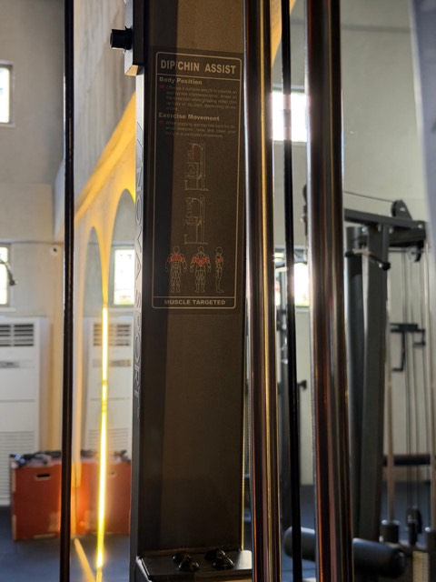
Dip / Chin Assist
Diz pedi seni yukarı iterek barfiks ve dips'i kolaylaştıran makine. Lat pulldown'da pin 8–9'a ulaşınca barfiks denemek için ideal.
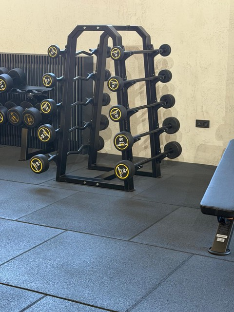
Sabit barbeller (10–30 kg)
Ağırlığı sabit kısa barlar. Faz 4'te pazı/arka kol için.
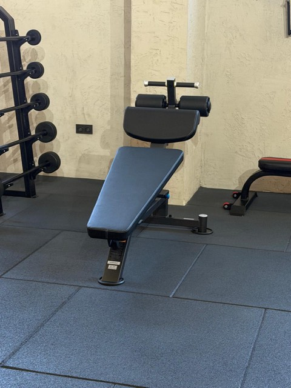
Decline mekik sehpası
Eğimli mekik sehpası. Plank ve dead bug bel için daha güvenli; bu sehpa şimdilik yok.
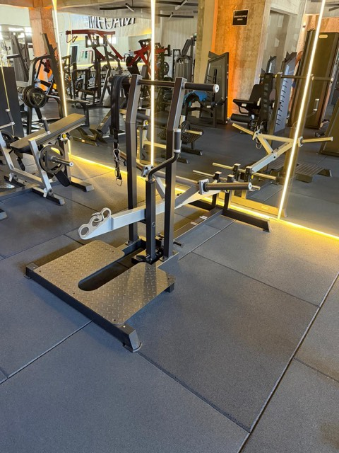
Platformlu kaldırma makinesi
Ayakta durup kolu kaldırdığın plakalı makine (belt squat / shrug tipi). Şimdilik gerek yok.
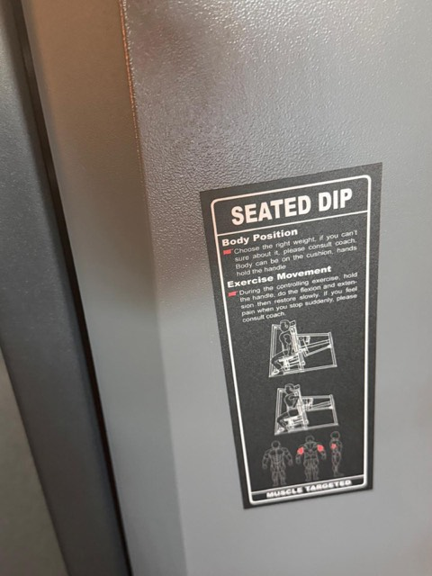
Seated Dip
Oturarak arka kol makinesi. Chest press ve shoulder press zaten arka kolu çalıştırıyor.